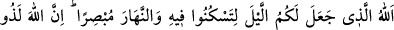
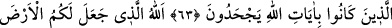
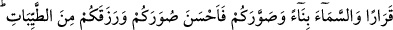
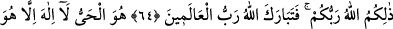
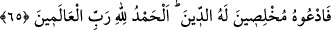

DİNDE
İHLÂSLI KİŞİLER OLARAK
O’NA DUA EDİN
61. İçinde dinlenesiniz diye geceyi, görmeniz için de gündüzü yaratan Allah’tır.
Şüphesiz Allah, insanlara karşı lütufkârdır. Fakat insanların çoğu şükretmezler.
62. İşte O, her şeyin yaratıcısı olan Rabbiniz Allah’dır. O’ndan başka tanrı
yoktur. O halde nasıl olup da döndürülüyorsunuz!
63. Allah’ın âyetlerini inatla inkâr edenler işte (haktan) böyle döndürülür.
64. Yeri sizin için yerleşim alanı, göğü de bir bina kılan, size şekil verip de
şeklinizi güzel yapan ve sizi temiz besinlerle rızıklandıran Allah’tır. İşte Allah, sizin
Rabbinizdir. Âlemlerin Rabbi Allah, yücelerden yücedir.
65. O daima diridir; O’ndan başka hiçbir tanrı yoktur. O halde dinde ihlâslı ve
samimi kişiler olarak O’na duâ edin. Her türlü övgü âlemlerin Rabbi Allah’a
mahsustur.
Sizin faydanıza olmak üzere, “içinde dinleseniz diye geceyi” karanlık kıldı. Gece
nisbeten daha nemli ve soğuk olduğu için, insanın harekete geçirici kuvveleri geceleyin
zayıflar. Gecenin karanlık oluşu da duyu organlarının hareketsizliğine sebep olur.
Böylece meşguliyet ve işleri daha az olduğu için, nefs, kuvveler ve duyu organları
geceleyin istirâhat eder. Nitekim İbn Heysam şöyle demiştir: Gece hareketsizliğe uygun
olarak yaratılmıştır. Çünkü iki tür hareket vardır: 1. Hararetten kaynaklanan tabiî
hareket, 2. Duyu organlarına dayalı olarak peşpeşe gelen düşüncelerden ileri gelen
ihtiyarî hareket. İşte gece karanlık olarak yaratılmıştır ki duyu organları kapansın. Soğuk
yaratılmıştır ki hareket sükûna ersin. Soğuğa “karr” (istikrar) denmesi de soğuğun
hareketsizliği, harâretin ise hareketi iktizâ etmesi sebebiyledir.